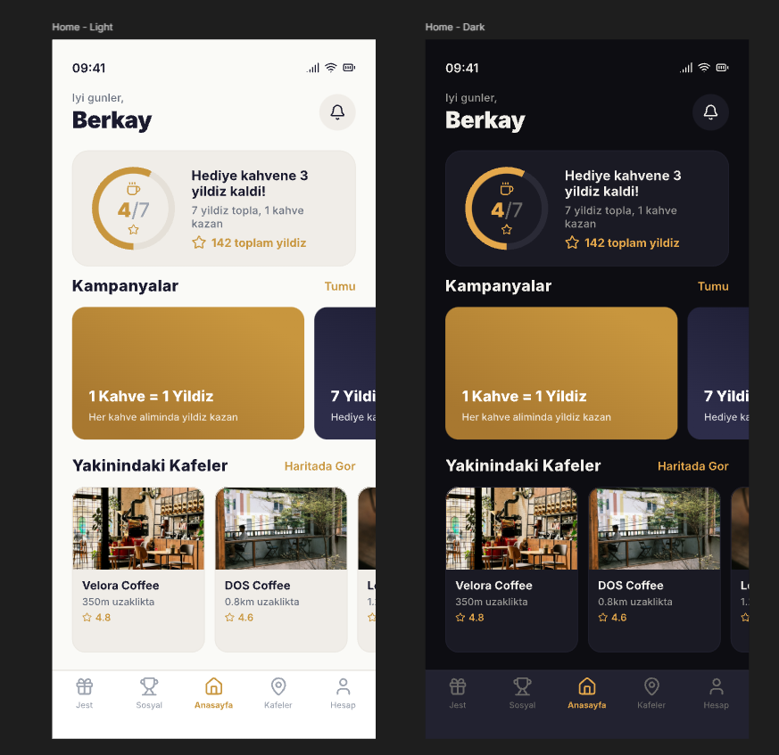
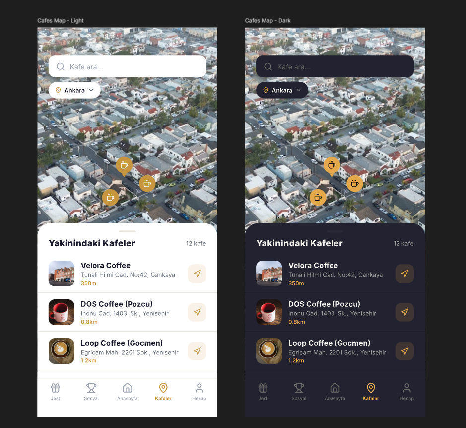
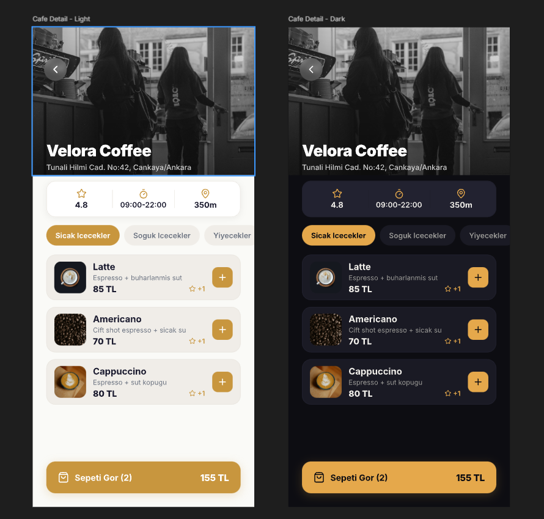

Keşif, sipariş, hediye ve sadakat tek deneyimde birleşir.
Bağımsız kahveciler için sadakat, keşif ve sipariş deneyimi
Kahve rutininizi tek uygulamada toplayan sıcak bir ekosistem.
Kayfe; kullanıcıların yeni nesil kahve deneyimini keşfetmesini, kafelerin ise sadık müşteri kitlesi oluşturmasını sağlayan bir platformdur. Yıldız biriktirme, QR ile sipariş, hediye kahve ve işletme analitiği tek akışta bir araya gelir.
- Yıldız sistemi ile tekrar gelen müşteri oluşturur
- QR tabanlı teslim akışı ile siparişi hızlandırır
- Kampanya, hediye ve görevlerle etkileşimi büyütür
Canlı deneyim
Bağımsız kafeleri öne çıkar.
Keşif, sadakat ve siparişi tek marka deneyiminde birleştiren yeni nesil bir vitrin.
Tekrar ziyaret, kampanya etkisi ve müşteri alışkanlığı aynı yapıda büyür.
Bağımsız kahvecileri daha görünür, daha güçlü ve daha tercih edilir hale getirir.
Temsili indirme alanı
App Store ve Google Play alanları hazır, yayın bağlantıları yakında.
Uygulama store'larda yayınlandığında bu QR kodlar gerçek indirme linklerine bağlanacak. Şimdilik bunlar tasarım prototipinin bir parçasıdır.
iOS
App Store
iPhone kullanıcıları için indirme akışı burada yer alacak.
Temsili QR - Yayın sonrası gerçek bağlantı eklenecek.
Android
Google Play
Android kullanıcıları için store yönlendirmesi burada olacak.
Temsili QR - Bu alanda daha sonra canlı QR yer alacak.
Neden Kayfe
Kullanıcı tarafında keyifli, işletme tarafında ölçülebilir bir sistem.
Yıldız ve ödül sistemi
Her kahve alımı, görev tamamlama ve özel kampanya kullanıcıyı geri getiren bir motivasyona dönüşür.
QR ile hızlı sipariş
Kullanıcı uygulamadan QR üretir, işletme QR okutma ile teslimi onaylar, yıldız otomatik olarak hesaba eklenir.
Jest ile hediye kahve
Arkadaşına kahve göndermek isteyen kullanıcı için hem duygusal hem de sosyal etkileşimi yüksek bir akış sunar.
Keşif ve harita deneyimi
Yakındaki kafeleri bul, yeni mekanlar keşfet, favori duraklarını tekrar ziyaret et.
Görevler, rozetler, sosyal yarış
Mini oyunlar, aylık liderlik tablosu ve görev sistemi sayesinde uygulama yalnızca sipariş aracı olarak kalmaz.
İşletme analitiği
Kafe sahipleri en çok satılan ürünleri, tekrar gelen müşterileri ve kampanya etkisini daha net görebilir.
Nasıl Çalışır
Kullanıcı ve mekan arasındaki akış oldukça net.
Kayfe'nin değeri yalnızca sadakat sisteminde değil, tüm deneyimi sade ve akıcı hale getirmesinde yatar.
Kafeyi seç, menüyü incele
Kullanıcı yakındaki anlaşmalı kafeleri görür, ürünleri inceler ve sepetini oluşturur.
QR kod oluştur, teslimi hızlandır
Sipariş onaylandığında QR kod oluşur. İşletme QR okutma ile siparişi pratik şekilde tamamlar.
Yıldız kazan, tekrar gel
Her teslimatın sonunda kullanıcı hesabına yıldız eklenir; görevler ve kampanyalarla motivasyon canlı kalır.
Uygulama ekranları
Tasarlanan deneyim; keşif, ödül ve siparişi birlikte taşır.



İşletmeler için
Yeni müşteri kazanımı ile tekrar gelen müşteri alışkanlığını aynı sistemde yönetin.
Kayfe; bağımsız kahvecilere aylık SaaS modeliyle yeni bir gelir ve sadakat altyapısı sunar. QR teslim akışı, kampanya kurguları ve veri görünürlüğü ile günlük operasyonu daha ölçülebilir hale getirir.
- Yeni müşteri potansiyeli ve daha yüksek tekrar ziyaret
- En çok satan ürünler ve müşteri davranışlarına dair görünürlük
- Kampanya, hediye ve ödül mekaniklerini tek panel mantığında düşünebilme
Sıkça Sorulan Sorular
Sistem nasıl işleyecek sorusunun kısa cevapları.
Kayfe kullanıcılar için ne sağlar?
Kullanıcı farklı bağımsız kahvecileri tek uygulamada görebilir, sipariş verebilir, yıldız biriktirebilir ve kampanyalardan yararlanabilir.
QR ile sipariş akışı nasıl çalışacak?
Kullanıcı siparişi tamamladığında uygulama içinden bir QR kod oluşur. Kafe personeli bu kodu okutarak teslimi onaylar ve yıldız kazanımı tetiklenir.
İşletmeler neden bu sisteme katılmak ister?
Çünkü yalnızca sadakat değil; yeni müşteri kazanımı, kampanya kurgusu ve temel veri görünürlüğü de aynı ürün içinde yer alır.
Kafeni Kayfe'ye dahil et
İşletme başvurunu bırak, detayları birlikte netleştirelim.
İlk görüşmede markan, şube yapın, menü yoğunluğun ve hedeflerin üzerinden geçelim. Bu form ilk prototipte e-posta istemcini açarak bilgileri bize gönderir.